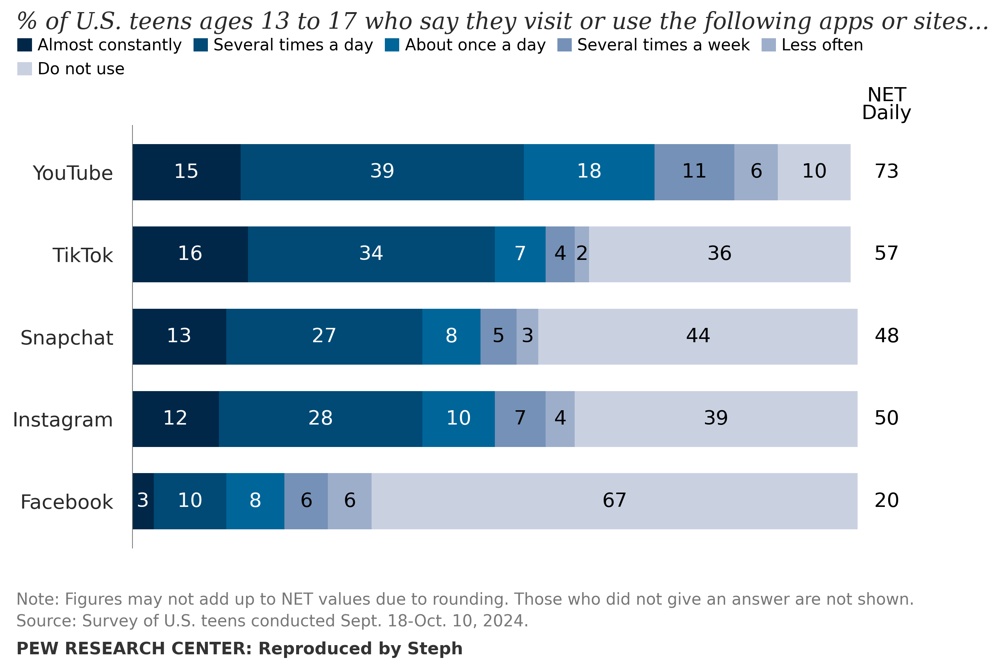
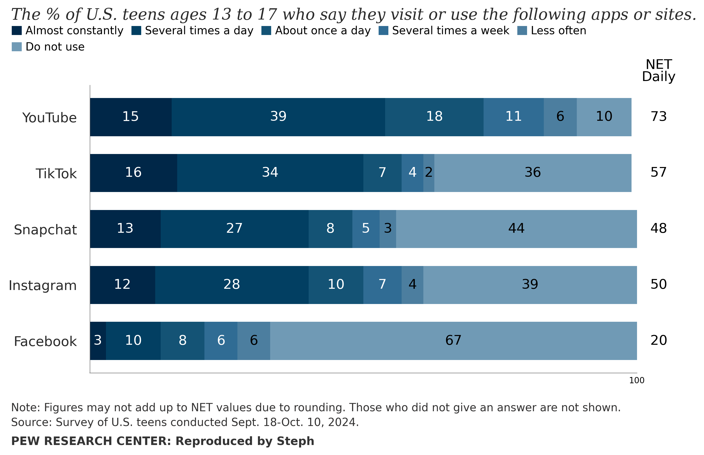
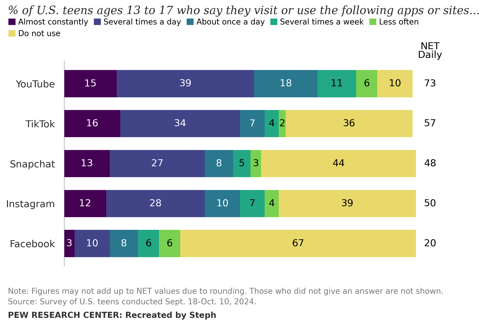
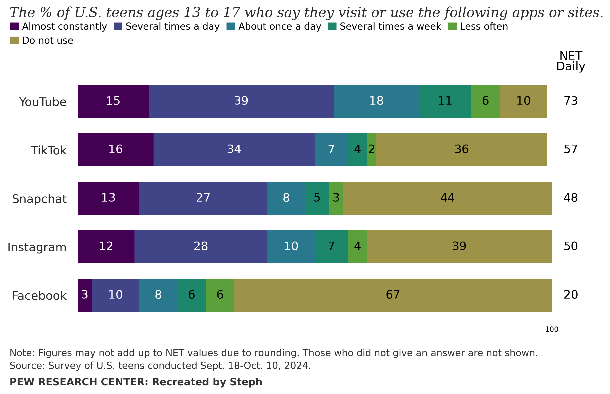

Exercise Summary
For this exercise, I revisited the reproduction and recreation created during the Module 5 Portfolio Exercise and examined both visualisations for accessibility and publication-readiness issues. I first conducted my own examination of the visualisations before checking them against the Data Visualization Checklist.
From these assessments, I identified several improvements that could be made to the colour contrast, text, titles and axes. I then implemented these changes and compared the altered visualisations with their original versions.
Planned Improvements
From my own personal examination, I plan to improve both my reproduction and recreation by altering the colours of some of the bar segments, in particular the “Less often” and “Do not use” colours, as to ensure that these meet the 3:1 contrast requirement for graphical elements with the white background. Initially, I had planned to change the background colour; however, it became clear that white was the best colour to contrast against.
I also intend on darkening the text colour for the source and note text at the bottom of the chart, since this must meet the 4.5:1 contrast ratio that is required for text against its background.
After checking my visualisations against the Data Visualization Checklist, I plan to change the title to ensure that it is a full sentence, and I would also like to include a faint x-axis at the bottom to show that the bar segments are measurable. However, I decided that axis labels would not be required as the text labels on the segments have their own numerical values.
This checklist also supported my own examination in that the text colour does not contrast sufficiently against the white background, so it will most definitely be darkened to improve this.
The Altered Visualisations
The original and altered versions of both my reproduction and recreation are shown side by side below to demonstrate the accessibility and publication-readiness improvements that were made.
Reproduction
Original

Improved

Recreation
Original

Improved

My Reflection
Reproduction
- The colours were darkened to ensure that the graphical elements meet the 3:1 contrast ratio.
- These colours were also checked against the Coblis Colour Blindness Simulator, and the plot passed each simulation.
- The text was darkened, and the title was changed to be a proper sentence.
Recreation
- The colours were darkened to ensure that the graphical elements meet the 3:1 contrast ratio.
-
I wanted to keep the Viridis colouring
as it is colour blindness friendly, but
it still had to be darkened.
- The yellow is darker than I would have liked it to be, but I spent hours trying to find a better colour and at least this one still had the same Viridis effect while also having the correct contrast ratio.
- The text was darkened, and the title was changed to be a proper sentence.
Generative AI Acknowledgement
[Insert your Generative AI acknowledgement here.]